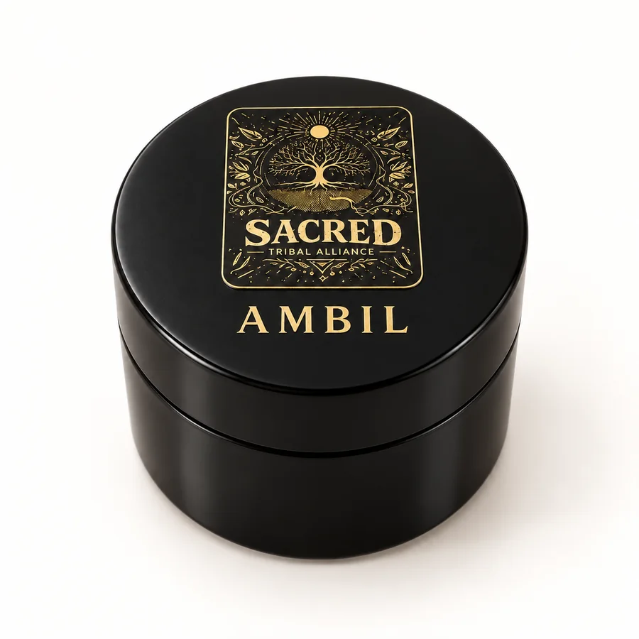

Ambil
A traditional mapacho tobacco paste prepared and used alongside Hapé in Amazonian ceremony. Concentrated, slow-burning, and deeply grounding — Ambil is one of the oldest forms of tobacco preparation in indigenous practice.
Ambil (pasta de tabaco) is made by cooking mapacho tobacco leaves down into a thick, dark paste. The process is labor-intensive and traditional — no shortcuts, no additives. What results is a preparation that has been part of Amazonian ceremonial life for generations, used both on its own and as a companion to Hapé.
In ceremony, it is typically applied in small amounts to the gums or inner lip and held there. It is not smoked. The preparation is much more concentrated than commercial tobacco products, and the context for its use is intentional and ceremonial.
We source Ambil from the same knowledge-holder relationships that supply our Hapé. Every batch comes with a real conversation about provenance — the community involved in its preparation, the tobacco used, and the process followed.

Ambil — Mapacho Tobacco Paste
1 oz jar
$60
Available by inquiry. Reach out via the contact page to discuss sourcing, preparation, and whether this offering is a fit for you. Payment and shipping arrangements are made directly — no checkout on this site.
Inquire to arrangeBefore you inquire
Ambil contains concentrated mapacho tobacco (Nicotiana rustica). It is not a recreational product. It is not appropriate for people with heart conditions, high blood pressure, or tobacco sensitivities. Legal status varies by jurisdiction — it is your responsibility to know the laws where you are. Nothing on this page is medical advice or a recommendation for any individual.